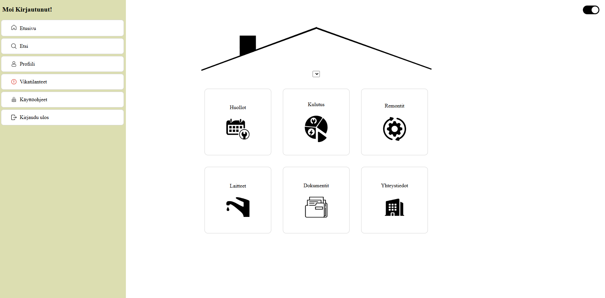
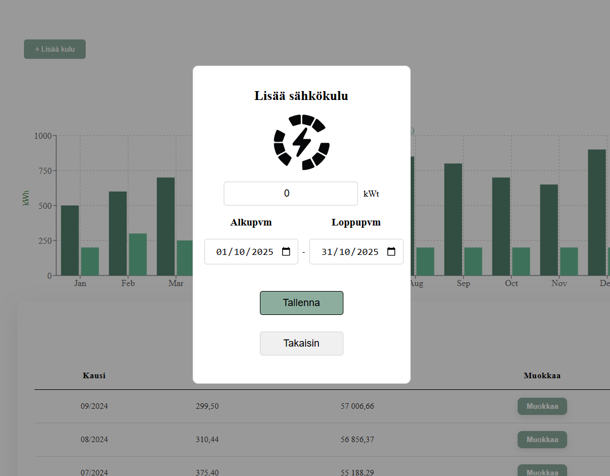

Digitaalinen huoltokirja
React-sovellus kiinteistöjen hallintaan | React + Node + MySQL
Kuvaus
React-pohjainen sovellus kiinteistöjen hallintaan. Kiinteistön omistaja voi seurata remontteja, huoltotarpeita, kuluja ja laitetietoja sekä hallita dokumentteja.
Roolini ja toteutus
Toimin projektin UI/UX-suunnittelijana ja tiimin Scrum-masterina. Vedin päivittäiset palaverit, dokumentoin projektin etenemisen GitHubiin ja suunnittelin sovelluksen käyttöliittymän. Toteutus tehtiin ryhmätyönä.
Keskeiset ominaisuudet
- Kiinteistön tietojen hallinta
- Kulujen ja remonttien seuranta
- Käyttöliittymän suunnittelu Figmassa
- React + Node + MySQL -sovellus
Opitut asiat
Opin Reactin käyttöä tiimiprojektissa, Scrum-työskentelyä, versionhallintaa branchein ja mergeihin perustuen sekä UI/UX-suunnittelun vaiheita.
Teknologiat
React, Node, MySQL, Figma, Canva, GitHub


